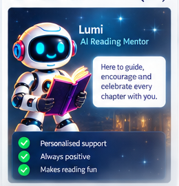

Questions reveal understanding.
MEET THE MENTORS
A guide beside the learner.
Not above them.
The mentor's job is to help the learner stay engaged with the text, explain their thinking and keep moving when something becomes difficult.

THE ROLE
Present without taking over.
A mentor can ask another question, clarify a word, notice a pattern and recognise effort. The learner still does the reading and thinking.
Explanations reveal how the learner is thinking.
Support is enough to continue, not enough to replace effort.
Patterns become useful context for parents.